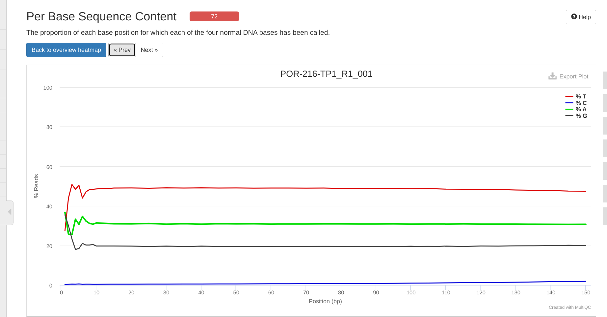

INTRO
Ran FastQC and MultiQC quality checks on the P.evermanni raw whole genome bisulfite sequencing (WGBS) data received 20241230, as part of urol-e5/timeseries_molecular (GitHub repo).
Additionally, the FastQ files have been renamed to follow the format <colony_id>-<timepoint>. This ensures consistency and easier identification of samples throughout the analysis process.
The contents below are from markdown knitted from 00.20-E-Peve-WGBS-reads-FastQC-MultiQC.Rmd (commit e05febc).
Background
This Rmd file will download raw WGBS FastQs for P.evermanni and evaluate them using FastQC and MultiQC(Ewels et al. 2016).
1 Create a Bash variables file
This allows usage of Bash variables across R Markdown chunks.
{
echo "#### Assign Variables ####"
echo ""
echo "# Data directories"
echo 'export timeseries_dir=/home/shared/8TB_HDD_01/sam/gitrepos/urol-e5/timeseries_molecular'
echo 'export output_dir_top=${timeseries_dir}/E-Peve/output/00.20-E-Peve-WGBS-reads-FastQC-MultiQC'
echo 'export raw_reads_dir=${timeseries_dir}/E-Peve/data/wgbs-raw-fastqs'
echo 'export raw_reads_url="https://owl.fish.washington.edu/nightingales/E5-coral-time-series/30-1067895835/"'
echo ""
echo "# Input files"
echo 'export metadata_file="${timeseries_dir}/M-multi-species/data/e5_DNA_Azenta_metadata.csv"'
echo "# Paths to programs"
echo 'export fastqc=/home/shared/FastQC-0.12.1/fastqc'
echo 'export multiqc=/home/sam/programs/mambaforge/bin/multiqc'
echo ""
echo "# Set FastQ filename patterns"
echo "export fastq_pattern='*.fastq.gz'"
echo "export R1_fastq_pattern='*_R1_*.fastq.gz'"
echo "export R2_fastq_pattern='*_R2_*.fastq.gz'"
echo ""
echo "# Set number of CPUs to use"
echo 'export threads=40'
echo ""
echo "## Inititalize arrays"
echo 'export fastq_array_R1=()'
echo 'export fastq_array_R2=()'
echo 'export raw_fastqs_array=()'
echo 'export R1_names_array=()'
echo 'export R2_names_array=()'
echo ""
echo "# Programs associative array"
echo "declare -A programs_array"
echo "programs_array=("
echo '[fastqc]="${fastqc}" \'
echo '[multiqc]="${multiqc}" \'
echo ")"
echo ""
echo "# Print formatting"
echo 'export line="--------------------------------------------------------"'
echo ""
} > .bashvars
cat .bashvars#### Assign Variables ####
# Data directories
export timeseries_dir=/home/shared/8TB_HDD_01/sam/gitrepos/urol-e5/timeseries_molecular
export output_dir_top=${timeseries_dir}/E-Peve/output/00.20-E-Peve-WGBS-reads-FastQC-MultiQC
export raw_reads_dir=${timeseries_dir}/E-Peve/data/wgbs-raw-fastqs
export raw_reads_url="https://owl.fish.washington.edu/nightingales/E5-coral-time-series/30-1067895835/"
# Input files
export metadata_file="${timeseries_dir}/M-multi-species/data/e5_DNA_Azenta_metadata.csv"
# Paths to programs
export fastqc=/home/shared/FastQC-0.12.1/fastqc
export multiqc=/home/sam/programs/mambaforge/bin/multiqc
# Set FastQ filename patterns
export fastq_pattern='*.fastq.gz'
export R1_fastq_pattern='*_R1_*.fastq.gz'
export R2_fastq_pattern='*_R2_*.fastq.gz'
# Set number of CPUs to use
export threads=40
## Inititalize arrays
export fastq_array_R1=()
export fastq_array_R2=()
export raw_fastqs_array=()
export R1_names_array=()
export R2_names_array=()
# Programs associative array
declare -A programs_array
programs_array=(
[fastqc]="${fastqc}" \
[multiqc]="${multiqc}" \
)
# Print formatting
export line="--------------------------------------------------------"2 Download P.evermanni WGBS FastQs
2.1 Inspect metadata file
# Load bash variables into memory
source .bashvars
head ${metadata_file} |
column -t -s","Sample Name* Plate Well number Azenta sample name Colony ID Timepoint Sample Type* Species/Strain* Sample Buffer* Total Amount (ng)* Volume (µL) Conc (ng/µL) Purification Method* Biosafety Level (BSL) Method Used for Fluorescence Method Used for Spectrophotometry Method Used for Electrophoresis
1 41 1 G4 1G4 ACR-225 TP1 Genomic DNA Acropora pulchra Tris buffer (8.0 pH) 2064 80 25.8 Column clean-up (Zymo Miniprep) None Qubit NA 1.5% TAE agarose non-denaturing gel "Please keep methylation libraries as we may want to sequence more"
2 291-20220211 2 A3 2A3 ACR-225 TP2 Genomic DNA Acropora pulchra Tris buffer (8.0 pH) 5064 80 63.3 Column clean-up (Zymo Miniprep) None Qubit NA 1.5% TAE agarose non-denaturing gel "Please keep methylation libraries as we may want to sequence more"
3 527 1 H5 1H5 ACR-225 TP3 Genomic DNA Acropora pulchra Tris buffer (8.0 pH) 4232 80 52.9 Column clean-up (Zymo Miniprep) None Qubit NA 1.5% TAE agarose non-denaturing gel "Please keep methylation libraries as we may want to sequence more"
4 911 1 C6 1C6 ACR-225 TP4 Genomic DNA Acropora pulchra Tris buffer (8.0 pH) 4488 80 56.1 Column clean-up (Zymo Miniprep) None Qubit NA 1.5% TAE agarose non-denaturing gel "Please keep methylation libraries as we may want to sequence more"
5 55 1 B2 1B2 ACR-229 TP1 Genomic DNA Acropora pulchra Tris buffer (8.0 pH) 2432 80 30.4 Column clean-up (Zymo Miniprep) None Qubit NA 1.5% TAE agarose non-denaturing gel "Please keep methylation libraries as we may want to sequence more"
6 295 1 E3 1E3 ACR-229 TP2 Genomic DNA Acropora pulchra Tris buffer (8.0 pH) 2760 80 34.5 Column clean-up (Zymo Miniprep) None Qubit NA 1.5% TAE agarose non-denaturing gel "Please keep methylation libraries as we may want to sequence more"
7 531 1 H3 1H3 ACR-229 TP3 Genomic DNA Acropora pulchra Tris buffer (8.0 pH) 5752 80 71.9 Column clean-up (Zymo Miniprep) None Qubit NA 1.5% TAE agarose non-denaturing gel "Please keep methylation libraries as we may want to sequence more"
8 931 1 F7 1F7 ACR-229 TP4 Genomic DNA Acropora pulchra Tris buffer (8.0 pH) 6008 80 75.1 Column clean-up (Zymo Miniprep) None Qubit NA 1.5% TAE agarose non-denaturing gel "Please keep methylation libraries as we may want to sequence more"
9 49 1 A1 1A1 ACR-237 TP1 Genomic DNA Acropora pulchra Tris buffer (8.0 pH) 1456 80 18.2 Column clean-up (Zymo Miniprep) None Qubit NA 1.5% TAE agarose non-denaturing gel "Please keep methylation libraries as we may want to sequence more"2.2 Download raw WGBS reads
Reads are downloaded from https://owl.fish.washington.edu/nightingales/E5-coral-time-series/30-1067895835/
Since sequencing included multiple species, the code will also parse only those that are P.evermanni.
Some filenames are preceeded by <sample_number>-- for some reason. This formatting is limited to only samples in E wells, so the code below uses that aspect to retrieve those samples as well.
The --cut-dirs 3 command cuts the preceding directory structure (i.e. nightingales/E5-coral-time-series/30-1067895835/) so that we just end up with the reads.
# Load bash variables into memory
source .bashvars
# Make output directory if it doesn't exist
mkdir --parents ${raw_reads_dir}
# Create list of only P.evermanni sample names
# Some samples names are preceded by the Sample Number for some reason,
# so this handles that formatting.
sample_list=$(awk -F"," '$11 == "Porites evermanni" { if ($9 ~ /E/) { print $8 "--" $9 } else { print $9 } }' ${timeseries_dir}/M-multi-species/data/30-1067895835-WGBS-sample-submission-form.csv \
| sort)
echo ""
echo "${line}"
echo ""
echo "Sample list:"
echo ""
echo "${sample_list}"
echo ""
echo "${line}"
echo ""
# Use printf to format each item for use in wget
formatted_list=$(printf "%s_*," ${sample_list})
# Remove the trailing comma
formatted_list="${formatted_list%,}"
# Output the final wget command
echo ""
echo "${line}"
echo ""
echo "Formatted wget accept list:"
echo ""
echo "wget --accept=\"$formatted_list\""
echo ""
echo "${line}"
echo ""
# Run wget to retrieve FastQs and MD5 files
wget \
--directory-prefix ${raw_reads_dir} \
--recursive \
--no-check-certificate \
--continue \
--cut-dirs 3 \
--no-host-directories \
--no-parent \
--quiet \
--accept=\"$formatted_list\" ${raw_reads_url}
ls -lh "${raw_reads_dir}"--------------------------------------------------------
Sample list:
109--1E9
110--2E1
111--1E4
114--1E6
1A7
1A9
1B11
1B6
1B8
1B9
1C2
1D1
1D10
1D12
1D2
1D6
1F10
1F3
1F6
1G10
1G11
1G2
1G6
1G9
1H12
1H8
2A2
2B3
2C1
2C3
2F2
2F3
2G1
2G3
2H2
88--1E5
93--1E11
96--1E8
--------------------------------------------------------
--------------------------------------------------------
Formatted wget accept list:
wget --accept="109--1E9_*,110--2E1_*,111--1E4_*,114--1E6_*,1A7_*,1A9_*,1B11_*,1B6_*,1B8_*,1B9_*,1C2_*,1D1_*,1D10_*,1D12_*,1D2_*,1D6_*,1F10_*,1F3_*,1F6_*,1G10_*,1G11_*,1G2_*,1G6_*,1G9_*,1H12_*,1H8_*,2A2_*,2B3_*,2C1_*,2C3_*,2F2_*,2F3_*,2G1_*,2G3_*,2H2_*,88--1E5_*,93--1E11_*,96--1E8_*"
--------------------------------------------------------
total 172G
-rw-r--r-- 1 sam sam 2.0G Dec 30 08:07 110--2E1_R1_001.fastq.gz
-rw-r--r-- 1 sam sam 61 Dec 30 08:07 110--2E1_R1_001.fastq.gz.md5
-rw-r--r-- 1 sam sam 2.0G Dec 30 08:09 110--2E1_R2_001.fastq.gz
-rw-r--r-- 1 sam sam 61 Dec 30 08:09 110--2E1_R2_001.fastq.gz.md5
-rw-r--r-- 1 sam sam 3.0G Dec 30 08:12 111--1E4_R1_001.fastq.gz
-rw-r--r-- 1 sam sam 61 Dec 30 08:12 111--1E4_R1_001.fastq.gz.md5
-rw-r--r-- 1 sam sam 2.9G Dec 30 08:15 111--1E4_R2_001.fastq.gz
-rw-r--r-- 1 sam sam 61 Dec 30 08:15 111--1E4_R2_001.fastq.gz.md5
-rw-r--r-- 1 sam sam 2.1G Dec 30 08:17 114--1E6_R1_001.fastq.gz
-rw-r--r-- 1 sam sam 61 Dec 30 08:17 114--1E6_R1_001.fastq.gz.md5
-rw-r--r-- 1 sam sam 2.0G Dec 30 08:19 114--1E6_R2_001.fastq.gz
-rw-r--r-- 1 sam sam 61 Dec 30 08:19 114--1E6_R2_001.fastq.gz.md5
-rw-r--r-- 1 sam sam 2.7G Dec 30 09:12 1A7_R1_001.fastq.gz
-rw-r--r-- 1 sam sam 56 Dec 30 09:12 1A7_R1_001.fastq.gz.md5
-rw-r--r-- 1 sam sam 2.6G Dec 30 09:15 1A7_R2_001.fastq.gz
-rw-r--r-- 1 sam sam 56 Dec 30 09:15 1A7_R2_001.fastq.gz.md5
-rw-r--r-- 1 sam sam 3.0G Dec 30 09:24 1A9_R1_001.fastq.gz
-rw-r--r-- 1 sam sam 56 Dec 30 09:24 1A9_R1_001.fastq.gz.md5
-rw-r--r-- 1 sam sam 2.9G Dec 30 09:28 1A9_R2_001.fastq.gz
-rw-r--r-- 1 sam sam 56 Dec 30 09:28 1A9_R2_001.fastq.gz.md5
-rw-r--r-- 1 sam sam 2.4G Dec 30 09:38 1B11_R1_001.fastq.gz
-rw-r--r-- 1 sam sam 57 Dec 30 09:38 1B11_R1_001.fastq.gz.md5
-rw-r--r-- 1 sam sam 2.4G Dec 30 09:40 1B11_R2_001.fastq.gz
-rw-r--r-- 1 sam sam 57 Dec 30 09:40 1B11_R2_001.fastq.gz.md5
-rw-r--r-- 1 sam sam 2.3G Dec 30 10:15 1B6_R1_001.fastq.gz
-rw-r--r-- 1 sam sam 56 Dec 30 10:15 1B6_R1_001.fastq.gz.md5
-rw-r--r-- 1 sam sam 2.3G Dec 30 10:18 1B6_R2_001.fastq.gz
-rw-r--r-- 1 sam sam 56 Dec 30 10:18 1B6_R2_001.fastq.gz.md5
-rw-r--r-- 1 sam sam 1.9G Dec 30 10:25 1B8_R1_001.fastq.gz
-rw-r--r-- 1 sam sam 56 Dec 30 10:25 1B8_R1_001.fastq.gz.md5
-rw-r--r-- 1 sam sam 1.9G Dec 30 10:27 1B8_R2_001.fastq.gz
-rw-r--r-- 1 sam sam 56 Dec 30 10:27 1B8_R2_001.fastq.gz.md5
-rw-r--r-- 1 sam sam 2.5G Dec 30 10:29 1B9_R1_001.fastq.gz
-rw-r--r-- 1 sam sam 56 Dec 30 10:29 1B9_R1_001.fastq.gz.md5
-rw-r--r-- 1 sam sam 2.5G Dec 30 10:32 1B9_R2_001.fastq.gz
-rw-r--r-- 1 sam sam 56 Dec 30 10:32 1B9_R2_001.fastq.gz.md5
-rw-r--r-- 1 sam sam 2.4G Dec 30 10:57 1C2_R1_001.fastq.gz
-rw-r--r-- 1 sam sam 56 Dec 30 10:57 1C2_R1_001.fastq.gz.md5
-rw-r--r-- 1 sam sam 2.4G Dec 30 10:59 1C2_R2_001.fastq.gz
-rw-r--r-- 1 sam sam 56 Dec 30 10:59 1C2_R2_001.fastq.gz.md5
-rw-r--r-- 1 sam sam 2.1G Dec 30 11:36 1D10_R1_001.fastq.gz
-rw-r--r-- 1 sam sam 57 Dec 30 11:36 1D10_R1_001.fastq.gz.md5
-rw-r--r-- 1 sam sam 2.1G Dec 30 11:38 1D10_R2_001.fastq.gz
-rw-r--r-- 1 sam sam 57 Dec 30 11:38 1D10_R2_001.fastq.gz.md5
-rw-r--r-- 1 sam sam 2.4G Dec 30 11:46 1D12_R1_001.fastq.gz
-rw-r--r-- 1 sam sam 57 Dec 30 11:46 1D12_R1_001.fastq.gz.md5
-rw-r--r-- 1 sam sam 2.4G Dec 30 11:48 1D12_R2_001.fastq.gz
-rw-r--r-- 1 sam sam 57 Dec 30 11:48 1D12_R2_001.fastq.gz.md5
-rw-r--r-- 1 sam sam 3.0G Dec 30 11:51 1D1_R1_001.fastq.gz
-rw-r--r-- 1 sam sam 56 Dec 30 11:51 1D1_R1_001.fastq.gz.md5
-rw-r--r-- 1 sam sam 2.9G Dec 30 11:54 1D1_R2_001.fastq.gz
-rw-r--r-- 1 sam sam 56 Dec 30 11:54 1D1_R2_001.fastq.gz.md5
-rw-r--r-- 1 sam sam 2.4G Dec 30 11:56 1D2_R1_001.fastq.gz
-rw-r--r-- 1 sam sam 56 Dec 30 11:56 1D2_R1_001.fastq.gz.md5
-rw-r--r-- 1 sam sam 2.4G Dec 30 11:58 1D2_R2_001.fastq.gz
-rw-r--r-- 1 sam sam 56 Dec 30 11:58 1D2_R2_001.fastq.gz.md5
-rw-r--r-- 1 sam sam 2.5G Dec 30 12:16 1D6_R1_001.fastq.gz
-rw-r--r-- 1 sam sam 56 Dec 30 12:16 1D6_R1_001.fastq.gz.md5
-rw-r--r-- 1 sam sam 2.5G Dec 30 12:19 1D6_R2_001.fastq.gz
-rw-r--r-- 1 sam sam 56 Dec 30 12:19 1D6_R2_001.fastq.gz.md5
-rw-r--r-- 1 sam sam 2.4G Dec 30 12:36 1F10_R1_001.fastq.gz
-rw-r--r-- 1 sam sam 57 Dec 30 12:36 1F10_R1_001.fastq.gz.md5
-rw-r--r-- 1 sam sam 2.4G Dec 30 12:38 1F10_R2_001.fastq.gz
-rw-r--r-- 1 sam sam 57 Dec 30 12:38 1F10_R2_001.fastq.gz.md5
-rw-r--r-- 1 sam sam 2.0G Dec 30 13:00 1F3_R1_001.fastq.gz
-rw-r--r-- 1 sam sam 56 Dec 30 13:00 1F3_R1_001.fastq.gz.md5
-rw-r--r-- 1 sam sam 2.0G Dec 30 13:02 1F3_R2_001.fastq.gz
-rw-r--r-- 1 sam sam 56 Dec 30 13:02 1F3_R2_001.fastq.gz.md5
-rw-r--r-- 1 sam sam 2.1G Dec 30 13:15 1F6_R1_001.fastq.gz
-rw-r--r-- 1 sam sam 56 Dec 30 13:15 1F6_R1_001.fastq.gz.md5
-rw-r--r-- 1 sam sam 2.1G Dec 30 13:17 1F6_R2_001.fastq.gz
-rw-r--r-- 1 sam sam 56 Dec 30 13:17 1F6_R2_001.fastq.gz.md5
-rw-r--r-- 1 sam sam 2.3G Dec 30 13:32 1G10_R1_001.fastq.gz
-rw-r--r-- 1 sam sam 57 Dec 30 13:32 1G10_R1_001.fastq.gz.md5
-rw-r--r-- 1 sam sam 2.2G Dec 30 13:34 1G10_R2_001.fastq.gz
-rw-r--r-- 1 sam sam 57 Dec 30 13:34 1G10_R2_001.fastq.gz.md5
-rw-r--r-- 1 sam sam 2.9G Dec 30 13:37 1G11_R1_001.fastq.gz
-rw-r--r-- 1 sam sam 57 Dec 30 13:37 1G11_R1_001.fastq.gz.md5
-rw-r--r-- 1 sam sam 2.9G Dec 30 13:39 1G11_R2_001.fastq.gz
-rw-r--r-- 1 sam sam 57 Dec 30 13:39 1G11_R2_001.fastq.gz.md5
-rw-r--r-- 1 sam sam 2.8G Dec 30 13:51 1G2_R1_001.fastq.gz
-rw-r--r-- 1 sam sam 56 Dec 30 13:51 1G2_R1_001.fastq.gz.md5
-rw-r--r-- 1 sam sam 2.8G Dec 30 13:54 1G2_R2_001.fastq.gz
-rw-r--r-- 1 sam sam 56 Dec 30 13:54 1G2_R2_001.fastq.gz.md5
-rw-r--r-- 1 sam sam 1.7G Dec 30 14:10 1G6_R1_001.fastq.gz
-rw-r--r-- 1 sam sam 56 Dec 30 14:10 1G6_R1_001.fastq.gz.md5
-rw-r--r-- 1 sam sam 1.7G Dec 30 14:12 1G6_R2_001.fastq.gz
-rw-r--r-- 1 sam sam 56 Dec 30 14:12 1G6_R2_001.fastq.gz.md5
-rw-r--r-- 1 sam sam 2.2G Dec 30 14:24 1G9_R1_001.fastq.gz
-rw-r--r-- 1 sam sam 56 Dec 30 14:24 1G9_R1_001.fastq.gz.md5
-rw-r--r-- 1 sam sam 2.2G Dec 30 14:26 1G9_R2_001.fastq.gz
-rw-r--r-- 1 sam sam 56 Dec 30 14:26 1G9_R2_001.fastq.gz.md5
-rw-r--r-- 1 sam sam 2.9G Dec 30 14:40 1H12_R1_001.fastq.gz
-rw-r--r-- 1 sam sam 57 Dec 30 14:40 1H12_R1_001.fastq.gz.md5
-rw-r--r-- 1 sam sam 3.0G Dec 30 14:43 1H12_R2_001.fastq.gz
-rw-r--r-- 1 sam sam 57 Dec 30 14:43 1H12_R2_001.fastq.gz.md5
-rw-r--r-- 1 sam sam 2.4G Dec 30 15:24 1H8_R1_001.fastq.gz
-rw-r--r-- 1 sam sam 56 Dec 30 15:24 1H8_R1_001.fastq.gz.md5
-rw-r--r-- 1 sam sam 2.4G Dec 30 15:27 1H8_R2_001.fastq.gz
-rw-r--r-- 1 sam sam 56 Dec 30 15:27 1H8_R2_001.fastq.gz.md5
-rw-r--r-- 1 sam sam 2.2G Dec 30 15:41 2A2_R1_001.fastq.gz
-rw-r--r-- 1 sam sam 56 Dec 30 15:41 2A2_R1_001.fastq.gz.md5
-rw-r--r-- 1 sam sam 2.2G Dec 30 15:43 2A2_R2_001.fastq.gz
-rw-r--r-- 1 sam sam 56 Dec 30 15:43 2A2_R2_001.fastq.gz.md5
-rw-r--r-- 1 sam sam 2.8G Dec 30 15:59 2B3_R1_001.fastq.gz
-rw-r--r-- 1 sam sam 56 Dec 30 15:59 2B3_R1_001.fastq.gz.md5
-rw-r--r-- 1 sam sam 2.9G Dec 30 16:03 2B3_R2_001.fastq.gz
-rw-r--r-- 1 sam sam 56 Dec 30 16:03 2B3_R2_001.fastq.gz.md5
-rw-r--r-- 1 sam sam 2.1G Dec 30 16:05 2C1_R1_001.fastq.gz
-rw-r--r-- 1 sam sam 56 Dec 30 16:05 2C1_R1_001.fastq.gz.md5
-rw-r--r-- 1 sam sam 2.1G Dec 30 16:08 2C1_R2_001.fastq.gz
-rw-r--r-- 1 sam sam 56 Dec 30 16:08 2C1_R2_001.fastq.gz.md5
-rw-r--r-- 1 sam sam 2.6G Dec 30 16:17 2C3_R1_001.fastq.gz
-rw-r--r-- 1 sam sam 56 Dec 30 16:17 2C3_R1_001.fastq.gz.md5
-rw-r--r-- 1 sam sam 2.6G Dec 30 16:20 2C3_R2_001.fastq.gz
-rw-r--r-- 1 sam sam 56 Dec 30 16:20 2C3_R2_001.fastq.gz.md5
-rw-r--r-- 1 sam sam 2.5G Dec 30 16:43 2F2_R1_001.fastq.gz
-rw-r--r-- 1 sam sam 56 Dec 30 16:43 2F2_R1_001.fastq.gz.md5
-rw-r--r-- 1 sam sam 2.6G Dec 30 16:46 2F2_R2_001.fastq.gz
-rw-r--r-- 1 sam sam 56 Dec 30 16:46 2F2_R2_001.fastq.gz.md5
-rw-r--r-- 1 sam sam 2.4G Dec 30 16:49 2F3_R1_001.fastq.gz
-rw-r--r-- 1 sam sam 56 Dec 30 16:49 2F3_R1_001.fastq.gz.md5
-rw-r--r-- 1 sam sam 2.4G Dec 30 16:51 2F3_R2_001.fastq.gz
-rw-r--r-- 1 sam sam 56 Dec 30 16:51 2F3_R2_001.fastq.gz.md5
-rw-r--r-- 1 sam sam 2.6G Dec 30 16:54 2G1_R1_001.fastq.gz
-rw-r--r-- 1 sam sam 56 Dec 30 16:54 2G1_R1_001.fastq.gz.md5
-rw-r--r-- 1 sam sam 2.6G Dec 30 16:57 2G1_R2_001.fastq.gz
-rw-r--r-- 1 sam sam 56 Dec 30 16:57 2G1_R2_001.fastq.gz.md5
-rw-r--r-- 1 sam sam 1.9G Dec 30 17:05 2G3_R1_001.fastq.gz
-rw-r--r-- 1 sam sam 56 Dec 30 17:05 2G3_R1_001.fastq.gz.md5
-rw-r--r-- 1 sam sam 1.9G Dec 30 17:07 2G3_R2_001.fastq.gz
-rw-r--r-- 1 sam sam 56 Dec 30 17:07 2G3_R2_001.fastq.gz.md5
-rw-r--r-- 1 sam sam 2.8G Dec 30 17:17 2H2_R1_001.fastq.gz
-rw-r--r-- 1 sam sam 56 Dec 30 17:17 2H2_R1_001.fastq.gz.md5
-rw-r--r-- 1 sam sam 2.8G Dec 30 17:20 2H2_R2_001.fastq.gz
-rw-r--r-- 1 sam sam 56 Dec 30 17:20 2H2_R2_001.fastq.gz.md5
-rw-r--r-- 1 sam sam 2.8G Dec 30 18:09 88--1E5_R1_001.fastq.gz
-rw-r--r-- 1 sam sam 60 Dec 30 18:09 88--1E5_R1_001.fastq.gz.md5
-rw-r--r-- 1 sam sam 2.7G Dec 30 18:13 88--1E5_R2_001.fastq.gz
-rw-r--r-- 1 sam sam 60 Dec 30 18:13 88--1E5_R2_001.fastq.gz.md5
-rw-r--r-- 1 sam sam 2.6G Dec 30 18:16 93--1E11_R1_001.fastq.gz
-rw-r--r-- 1 sam sam 61 Dec 30 18:16 93--1E11_R1_001.fastq.gz.md5
-rw-r--r-- 1 sam sam 2.5G Dec 30 18:18 93--1E11_R2_001.fastq.gz
-rw-r--r-- 1 sam sam 61 Dec 30 18:18 93--1E11_R2_001.fastq.gz.md52.3 Verify raw read checksums
# Load bash variables into memory
source .bashvars
cd "${raw_reads_dir}"
for file in *.md5
do
md5sum --check "${file}"
done./110--2E1_R1_001.fastq.gz: OK
./110--2E1_R2_001.fastq.gz: OK
./111--1E4_R1_001.fastq.gz: OK
./111--1E4_R2_001.fastq.gz: OK
./114--1E6_R1_001.fastq.gz: OK
./114--1E6_R2_001.fastq.gz: OK
./1A7_R1_001.fastq.gz: OK
./1A7_R2_001.fastq.gz: OK
./1A9_R1_001.fastq.gz: OK
./1A9_R2_001.fastq.gz: OK
./1B11_R1_001.fastq.gz: OK
./1B11_R2_001.fastq.gz: OK
./1B6_R1_001.fastq.gz: OK
./1B6_R2_001.fastq.gz: OK
./1B8_R1_001.fastq.gz: OK
./1B8_R2_001.fastq.gz: OK
./1B9_R1_001.fastq.gz: OK
./1B9_R2_001.fastq.gz: OK
./1C2_R1_001.fastq.gz: OK
./1C2_R2_001.fastq.gz: OK
./1D10_R1_001.fastq.gz: OK
./1D10_R2_001.fastq.gz: OK
./1D12_R1_001.fastq.gz: OK
./1D12_R2_001.fastq.gz: OK
./1D1_R1_001.fastq.gz: OK
./1D1_R2_001.fastq.gz: OK
./1D2_R1_001.fastq.gz: OK
./1D2_R2_001.fastq.gz: OK
./1D6_R1_001.fastq.gz: OK
./1D6_R2_001.fastq.gz: OK
./1F10_R1_001.fastq.gz: OK
./1F10_R2_001.fastq.gz: OK
./1F3_R1_001.fastq.gz: OK
./1F3_R2_001.fastq.gz: OK
./1F6_R1_001.fastq.gz: OK
./1F6_R2_001.fastq.gz: OK
./1G10_R1_001.fastq.gz: OK
./1G10_R2_001.fastq.gz: OK
./1G11_R1_001.fastq.gz: OK
./1G11_R2_001.fastq.gz: OK
./1G2_R1_001.fastq.gz: OK
./1G2_R2_001.fastq.gz: OK
./1G6_R1_001.fastq.gz: OK
./1G6_R2_001.fastq.gz: OK
./1G9_R1_001.fastq.gz: OK
./1G9_R2_001.fastq.gz: OK
./1H12_R1_001.fastq.gz: OK
./1H12_R2_001.fastq.gz: OK
./1H8_R1_001.fastq.gz: OK
./1H8_R2_001.fastq.gz: OK
./2A2_R1_001.fastq.gz: OK
./2A2_R2_001.fastq.gz: OK
./2B3_R1_001.fastq.gz: OK
./2B3_R2_001.fastq.gz: OK
./2C1_R1_001.fastq.gz: OK
./2C1_R2_001.fastq.gz: OK
./2C3_R1_001.fastq.gz: OK
./2C3_R2_001.fastq.gz: OK
./2F2_R1_001.fastq.gz: OK
./2F2_R2_001.fastq.gz: OK
./2F3_R1_001.fastq.gz: OK
./2F3_R2_001.fastq.gz: OK
./2G1_R1_001.fastq.gz: OK
./2G1_R2_001.fastq.gz: OK
./2G3_R1_001.fastq.gz: OK
./2G3_R2_001.fastq.gz: OK
./2H2_R1_001.fastq.gz: OK
./2H2_R2_001.fastq.gz: OK
./88--1E5_R1_001.fastq.gz: OK
./88--1E5_R2_001.fastq.gz: OK
./93--1E11_R1_001.fastq.gz: OK
./93--1E11_R2_001.fastq.gz: OK3 Rename FastQs for Project Consistency
New naming format will be <colony_id>-<timepoint>.
Use of a temp file, instead of working directory from the metadata file can avoid potential issues with character/text formatting from the input CSV.
# Load bash variables into memory
source .bashvars
cd "${raw_reads_dir}"
# Create an associative array to store the mapping
declare -A number_to_colony_timepoint
# Create a temporary file to store the mapping
temp_mapping_file=$(mktemp)
# Read the metadata file and populate the temporary file using awk
# Maps Azenta sample name to colony_id and timepoint.
awk -F, 'NR > 1 { print $5, $6 "-" $7 }' "$metadata_file" > "$temp_mapping_file"
# Read the temporary file and populate the associative array
while read -r Number colony_timepoint; do
number_to_colony_timepoint["$Number"]="$colony_timepoint"
done < "$temp_mapping_file"
# Remove the temporary file
rm "$temp_mapping_file"
# Print the associative array for debugging
echo "Number to colony_id-Timepoint mapping:"
for key in "${!number_to_colony_timepoint[@]}"; do
echo ""
echo "$key -> ${number_to_colony_timepoint[$key]}"
echo ""
done
# Iterate over the FastQ files in the current directory
for fastq_file in *.fastq.gz; do
# Extract the sample number from the filename
sample_number=$(echo "$fastq_file" | sed -E 's/^([0-9]+--)?([A-Za-z0-9]+).*/\2/')
# Check if the sample number exists in the associative array
if [[ -n "${number_to_colony_timepoint[$sample_number]}" ]]; then
new_sample_name="${number_to_colony_timepoint[$sample_number]}"
new_filename=$(echo "$fastq_file" | sed -E "s/^([0-9]+--)?$sample_number/$new_sample_name/")
if [[ "$fastq_file" != "$new_filename" ]]; then
mv "$fastq_file" "$new_filename"
echo "Renamed $fastq_file to $new_filename"
else
echo "No renaming needed for $fastq_file"
fi
else
echo "Sample number '$sample_number' not found in metadata."
# Debugging: Print all keys in the associative array with quotes
echo "Available keys in the associative array:"
for key in "${!number_to_colony_timepoint[@]}"; do
echo "'$key'"
done
fi
doneNumber to colony_id-Timepoint mapping:
1B3 -> SR_1-440-NA
1B2 -> ACR-229-TP1
1B1 -> ACR-150-TP3
1B7 -> POC-40-TP3
1B6 -> POR-245-TP2
1B5 -> ACR-244-TP2
1B4 -> ACR-244-TP4
1B9 -> POR-236-TP2
1B8 -> POR-69-TP1
1D5 -> POC-57-TP1
1D4 -> POC-52-TP3
1C1 -> POC-222-TP3
1C2 -> POR-83-TP4
1D7 -> ACR-186-TP4
1D6 -> POR-245-TP4
1C3 -> POC-53-TP3
1D1 -> POR-216-TP2
1B12 -> POC-219-TP4
1C4 -> POC-201-TP2
1C5 -> POC-52-TP4
1B10 -> ACR-150-TP1
1D3 -> ACR-237-TP4
1C6 -> ACR-225-TP4
1B11 -> POR-69-TP4
1D2 -> POR-260-TP1
1C7 -> POC-53-TP1
1C8 -> ACR-145-TP2
1C9 -> ACR-237-TP3
2C3 -> POR-73-TP1
1D9 -> ACR-139-TP3
2C2 -> ACR-145-TP3
1D8 -> ACR-139-TP4
2C1 -> POR-216-TP1
1E2 -> POC-42-TP3
1E3 -> ACR-229-TP2
1E1 -> POC-259-TP4
1E6 -> POR-83-TP1
1E7 -> ACR-237-TP2
1E4 -> POR-74-TP2
1E5 -> POR-245-TP3
1E11 -> POR-260-TP4
1E10 -> POC-259-TP3
1E8 -> POR-262-TP3
1E9 -> POR-73-TP4
1E12 -> POC-222-TP2
2B1 -> SR_3-440B-NA
2B2 -> POC-40-TP2
2B3 -> POR-262-TP4
2E1 -> POR-74-TP1
2E3 -> POC-255-TP4
2E2 -> ACR-186-TP3
1H1 -> POC-57-TP4
1H3 -> ACR-229-TP3
1H2 -> ACR-173-TP3
2D2 -> ACR-173-TP2
1H5 -> ACR-225-TP3
2D3 -> POC-52-TP1
1H4 -> POC-201-TP1
1H7 -> POC-219-TP1
1F9 -> ACR-265-TP2
1F8 -> POC-53-TP4
2D1 -> ACR-150-TP4
1H6 -> ACR-150-TP2
1H9 -> ACR-173-TP1
1F7 -> ACR-229-TP4
1H8 -> POR-74-TP4
1F6 -> POR-260-TP2
1F5 -> ACR-145-TP4
1F4 -> POC-255-TP1
1F3 -> POR-83-TP3
1D10 -> POR-69-TP2
1D11 -> SR_2-84-NA
1F2 -> POC-57-TP3
1D12 -> POR-73-TP3
1F1 -> ACR-244-TP1
2G3 -> POR-74-TP3
2G2 -> ACR-265-TP1
2G1 -> POR-245-TP1
1G8 -> POC-222-TP1
1G9 -> POR-260-TP3
1G12 -> POC-40-TP1
1G11 -> POR-216-TP3
1G10 -> POR-72-TP3
1G4 -> ACR-225-TP1
1G5 -> ACR-173-TP4
1G6 -> POR-236-TP1
1G7 -> POC-222-TP4
1G1 -> POC-57-TP2
1G2 -> POR-216-TP4
1G3 -> POC-259-TP1
2F1 -> POC-255-TP3
2F2 -> POR-83-TP2
2F3 -> POR-72-TP4
2A1 -> POC-40-TP4
1A11 -> POC-201-TP3
1A10 -> ACR-139-TP1
2A3 -> ACR-225-TP2
2A2 -> POR-72-TP2
1A12 -> ACR-186-TP2
2H2 -> POR-262-TP2
2H3 -> ACR-244-TP3
2H1 -> POC-42-TP1
1H10 -> POC-219-TP2
1A6 -> ACR-265-TP3
1A7 -> POR-262-TP1
1C12 -> POC-52-TP2
1H11 -> ACR-265-TP4
1H12 -> POR-73-TP2
1C11 -> POC-42-TP4
1A4 -> POC-259-TP2
1C10 -> POC-53-TP2
1A5 -> ACR-139-TP2
1A2 -> POC-219-TP3
1A3 -> ACR-145-TP1
1A1 -> ACR-237-TP1
1F12 -> POC-255-TP2
1F10 -> POR-72-TP1
1F11 -> POC-42-TP2
1A8 -> ACR-186-TP1
1A9 -> POR-69-TP3
Renamed 110--2E1_R1_001.fastq.gz to POR-74-TP1_R1_001.fastq.gz
Renamed 110--2E1_R2_001.fastq.gz to POR-74-TP1_R2_001.fastq.gz
Renamed 111--1E4_R1_001.fastq.gz to POR-74-TP2_R1_001.fastq.gz
Renamed 111--1E4_R2_001.fastq.gz to POR-74-TP2_R2_001.fastq.gz
Renamed 114--1E6_R1_001.fastq.gz to POR-83-TP1_R1_001.fastq.gz
Renamed 114--1E6_R2_001.fastq.gz to POR-83-TP1_R2_001.fastq.gz
Renamed 1A7_R1_001.fastq.gz to POR-262-TP1_R1_001.fastq.gz
Renamed 1A7_R2_001.fastq.gz to POR-262-TP1_R2_001.fastq.gz
Renamed 1A9_R1_001.fastq.gz to POR-69-TP3_R1_001.fastq.gz
Renamed 1A9_R2_001.fastq.gz to POR-69-TP3_R2_001.fastq.gz
Renamed 1B11_R1_001.fastq.gz to POR-69-TP4_R1_001.fastq.gz
Renamed 1B11_R2_001.fastq.gz to POR-69-TP4_R2_001.fastq.gz
Renamed 1B6_R1_001.fastq.gz to POR-245-TP2_R1_001.fastq.gz
Renamed 1B6_R2_001.fastq.gz to POR-245-TP2_R2_001.fastq.gz
Renamed 1B8_R1_001.fastq.gz to POR-69-TP1_R1_001.fastq.gz
Renamed 1B8_R2_001.fastq.gz to POR-69-TP1_R2_001.fastq.gz
Renamed 1B9_R1_001.fastq.gz to POR-236-TP2_R1_001.fastq.gz
Renamed 1B9_R2_001.fastq.gz to POR-236-TP2_R2_001.fastq.gz
Renamed 1C2_R1_001.fastq.gz to POR-83-TP4_R1_001.fastq.gz
Renamed 1C2_R2_001.fastq.gz to POR-83-TP4_R2_001.fastq.gz
Renamed 1D10_R1_001.fastq.gz to POR-69-TP2_R1_001.fastq.gz
Renamed 1D10_R2_001.fastq.gz to POR-69-TP2_R2_001.fastq.gz
Renamed 1D12_R1_001.fastq.gz to POR-73-TP3_R1_001.fastq.gz
Renamed 1D12_R2_001.fastq.gz to POR-73-TP3_R2_001.fastq.gz
Renamed 1D1_R1_001.fastq.gz to POR-216-TP2_R1_001.fastq.gz
Renamed 1D1_R2_001.fastq.gz to POR-216-TP2_R2_001.fastq.gz
Renamed 1D2_R1_001.fastq.gz to POR-260-TP1_R1_001.fastq.gz
Renamed 1D2_R2_001.fastq.gz to POR-260-TP1_R2_001.fastq.gz
Renamed 1D6_R1_001.fastq.gz to POR-245-TP4_R1_001.fastq.gz
Renamed 1D6_R2_001.fastq.gz to POR-245-TP4_R2_001.fastq.gz
Renamed 1F10_R1_001.fastq.gz to POR-72-TP1_R1_001.fastq.gz
Renamed 1F10_R2_001.fastq.gz to POR-72-TP1_R2_001.fastq.gz
Renamed 1F3_R1_001.fastq.gz to POR-83-TP3_R1_001.fastq.gz
Renamed 1F3_R2_001.fastq.gz to POR-83-TP3_R2_001.fastq.gz
Renamed 1F6_R1_001.fastq.gz to POR-260-TP2_R1_001.fastq.gz
Renamed 1F6_R2_001.fastq.gz to POR-260-TP2_R2_001.fastq.gz
Renamed 1G10_R1_001.fastq.gz to POR-72-TP3_R1_001.fastq.gz
Renamed 1G10_R2_001.fastq.gz to POR-72-TP3_R2_001.fastq.gz
Renamed 1G11_R1_001.fastq.gz to POR-216-TP3_R1_001.fastq.gz
Renamed 1G11_R2_001.fastq.gz to POR-216-TP3_R2_001.fastq.gz
Renamed 1G2_R1_001.fastq.gz to POR-216-TP4_R1_001.fastq.gz
Renamed 1G2_R2_001.fastq.gz to POR-216-TP4_R2_001.fastq.gz
Renamed 1G6_R1_001.fastq.gz to POR-236-TP1_R1_001.fastq.gz
Renamed 1G6_R2_001.fastq.gz to POR-236-TP1_R2_001.fastq.gz
Renamed 1G9_R1_001.fastq.gz to POR-260-TP3_R1_001.fastq.gz
Renamed 1G9_R2_001.fastq.gz to POR-260-TP3_R2_001.fastq.gz
Renamed 1H12_R1_001.fastq.gz to POR-73-TP2_R1_001.fastq.gz
Renamed 1H12_R2_001.fastq.gz to POR-73-TP2_R2_001.fastq.gz
Renamed 1H8_R1_001.fastq.gz to POR-74-TP4_R1_001.fastq.gz
Renamed 1H8_R2_001.fastq.gz to POR-74-TP4_R2_001.fastq.gz
Renamed 2A2_R1_001.fastq.gz to POR-72-TP2_R1_001.fastq.gz
Renamed 2A2_R2_001.fastq.gz to POR-72-TP2_R2_001.fastq.gz
Renamed 2B3_R1_001.fastq.gz to POR-262-TP4_R1_001.fastq.gz
Renamed 2B3_R2_001.fastq.gz to POR-262-TP4_R2_001.fastq.gz
Renamed 2C1_R1_001.fastq.gz to POR-216-TP1_R1_001.fastq.gz
Renamed 2C1_R2_001.fastq.gz to POR-216-TP1_R2_001.fastq.gz
Renamed 2C3_R1_001.fastq.gz to POR-73-TP1_R1_001.fastq.gz
Renamed 2C3_R2_001.fastq.gz to POR-73-TP1_R2_001.fastq.gz
Renamed 2F2_R1_001.fastq.gz to POR-83-TP2_R1_001.fastq.gz
Renamed 2F2_R2_001.fastq.gz to POR-83-TP2_R2_001.fastq.gz
Renamed 2F3_R1_001.fastq.gz to POR-72-TP4_R1_001.fastq.gz
Renamed 2F3_R2_001.fastq.gz to POR-72-TP4_R2_001.fastq.gz
Renamed 2G1_R1_001.fastq.gz to POR-245-TP1_R1_001.fastq.gz
Renamed 2G1_R2_001.fastq.gz to POR-245-TP1_R2_001.fastq.gz
Renamed 2G3_R1_001.fastq.gz to POR-74-TP3_R1_001.fastq.gz
Renamed 2G3_R2_001.fastq.gz to POR-74-TP3_R2_001.fastq.gz
Renamed 2H2_R1_001.fastq.gz to POR-262-TP2_R1_001.fastq.gz
Renamed 2H2_R2_001.fastq.gz to POR-262-TP2_R2_001.fastq.gz
Renamed 88--1E5_R1_001.fastq.gz to POR-245-TP3_R1_001.fastq.gz
Renamed 88--1E5_R2_001.fastq.gz to POR-245-TP3_R2_001.fastq.gz
Renamed 93--1E11_R1_001.fastq.gz to POR-260-TP4_R1_001.fastq.gz
Renamed 93--1E11_R2_001.fastq.gz to POR-260-TP4_R2_001.fastq.gz4 FastQC/MultiQC on raw reads
# Load bash variables into memory
source .bashvars
############ RUN FASTQC ############
# Create array of trimmed FastQs
raw_fastqs_array=(${raw_reads_dir}/${fastq_pattern})
# Pass array contents to new variable as space-delimited list
raw_fastqc_list=$(echo "${raw_fastqs_array[*]}")
echo "Beginning FastQC on raw reads..."
echo ""
# Run FastQC
### NOTE: Do NOT quote raw_fastqc_list
${programs_array[fastqc]} \
--threads ${threads} \
--outdir ${raw_reads_dir} \
--quiet \
${raw_fastqc_list}
echo "FastQC on raw reads complete!"
echo ""
############ END FASTQC ############
############ RUN MULTIQC ############
echo "Beginning MultiQC on raw FastQC..."
echo ""
${programs_array[multiqc]} \
${raw_reads_dir} \
--interactive \
-o ${raw_reads_dir}
echo ""
echo "MultiQC on raw FastQs complete."
echo ""
############ END MULTIQC ############
echo "Removing FastQC zip files."
echo ""
rm ${raw_reads_dir}/*.zip
echo "FastQC zip files removed."
echo ""
# View directory contents
ls -lh ${raw_reads_dir}Beginning FastQC on raw reads...
application/gzip
application/gzip
application/gzip
application/gzip
application/gzip
application/gzip
application/gzip
application/gzip
application/gzip
application/gzip
application/gzip
application/gzip
application/gzip
application/gzip
application/gzip
application/gzip
application/gzip
application/gzip
application/gzip
application/gzip
application/gzip
application/gzip
application/gzip
application/gzip
application/gzip
application/gzip
application/gzip
application/gzip
application/gzip
application/gzip
application/gzip
application/gzip
application/gzip
application/gzip
application/gzip
application/gzip
application/gzip
application/gzip
application/gzip
application/gzip
application/gzip
application/gzip
application/gzip
application/gzip
application/gzip
application/gzip
application/gzip
application/gzip
application/gzip
application/gzip
application/gzip
application/gzip
application/gzip
application/gzip
application/gzip
application/gzip
application/gzip
application/gzip
application/gzip
application/gzip
application/gzip
application/gzip
application/gzip
application/gzip
application/gzip
application/gzip
application/gzip
application/gzip
application/gzip
application/gzip
application/gzip
application/gzip
FastQC on raw reads complete!
Beginning MultiQC on raw FastQC...
/// MultiQC 🔍 | v1.14
| multiqc | MultiQC Version v1.27 now available!
| multiqc | Search path : /home/shared/8TB_HDD_01/sam/gitrepos/urol-e5/timeseries_molecular/E-Peve/data/wgbs-raw-fastqs
| searching | ━━━━━━━━━━━━━━━━━━━━━━━━━━━━━━━━━━━━━━━━ 100% 288/288
| fastqc | Found 72 reports
| multiqc | Compressing plot data
| multiqc | Report : ../data/wgbs-raw-fastqs/multiqc_report.html
| multiqc | Data : ../data/wgbs-raw-fastqs/multiqc_data
| multiqc | MultiQC complete
MultiQC on raw FastQs complete.
Removing FastQC zip files.
FastQC zip files removed.
total 172G
-rw-r--r-- 1 sam sam 61 Dec 30 08:07 110--2E1_R1_001.fastq.gz.md5
-rw-r--r-- 1 sam sam 61 Dec 30 08:09 110--2E1_R2_001.fastq.gz.md5
-rw-r--r-- 1 sam sam 61 Dec 30 08:12 111--1E4_R1_001.fastq.gz.md5
-rw-r--r-- 1 sam sam 61 Dec 30 08:15 111--1E4_R2_001.fastq.gz.md5
-rw-r--r-- 1 sam sam 61 Dec 30 08:17 114--1E6_R1_001.fastq.gz.md5
-rw-r--r-- 1 sam sam 61 Dec 30 08:19 114--1E6_R2_001.fastq.gz.md5
-rw-r--r-- 1 sam sam 56 Dec 30 09:12 1A7_R1_001.fastq.gz.md5
-rw-r--r-- 1 sam sam 56 Dec 30 09:15 1A7_R2_001.fastq.gz.md5
-rw-r--r-- 1 sam sam 56 Dec 30 09:24 1A9_R1_001.fastq.gz.md5
-rw-r--r-- 1 sam sam 56 Dec 30 09:28 1A9_R2_001.fastq.gz.md5
-rw-r--r-- 1 sam sam 57 Dec 30 09:38 1B11_R1_001.fastq.gz.md5
-rw-r--r-- 1 sam sam 57 Dec 30 09:40 1B11_R2_001.fastq.gz.md5
-rw-r--r-- 1 sam sam 56 Dec 30 10:15 1B6_R1_001.fastq.gz.md5
-rw-r--r-- 1 sam sam 56 Dec 30 10:18 1B6_R2_001.fastq.gz.md5
-rw-r--r-- 1 sam sam 56 Dec 30 10:25 1B8_R1_001.fastq.gz.md5
-rw-r--r-- 1 sam sam 56 Dec 30 10:27 1B8_R2_001.fastq.gz.md5
-rw-r--r-- 1 sam sam 56 Dec 30 10:29 1B9_R1_001.fastq.gz.md5
-rw-r--r-- 1 sam sam 56 Dec 30 10:32 1B9_R2_001.fastq.gz.md5
-rw-r--r-- 1 sam sam 56 Dec 30 10:57 1C2_R1_001.fastq.gz.md5
-rw-r--r-- 1 sam sam 56 Dec 30 10:59 1C2_R2_001.fastq.gz.md5
-rw-r--r-- 1 sam sam 57 Dec 30 11:36 1D10_R1_001.fastq.gz.md5
-rw-r--r-- 1 sam sam 57 Dec 30 11:38 1D10_R2_001.fastq.gz.md5
-rw-r--r-- 1 sam sam 57 Dec 30 11:46 1D12_R1_001.fastq.gz.md5
-rw-r--r-- 1 sam sam 57 Dec 30 11:48 1D12_R2_001.fastq.gz.md5
-rw-r--r-- 1 sam sam 56 Dec 30 11:51 1D1_R1_001.fastq.gz.md5
-rw-r--r-- 1 sam sam 56 Dec 30 11:54 1D1_R2_001.fastq.gz.md5
-rw-r--r-- 1 sam sam 56 Dec 30 11:56 1D2_R1_001.fastq.gz.md5
-rw-r--r-- 1 sam sam 56 Dec 30 11:58 1D2_R2_001.fastq.gz.md5
-rw-r--r-- 1 sam sam 56 Dec 30 12:16 1D6_R1_001.fastq.gz.md5
-rw-r--r-- 1 sam sam 56 Dec 30 12:19 1D6_R2_001.fastq.gz.md5
-rw-r--r-- 1 sam sam 57 Dec 30 12:36 1F10_R1_001.fastq.gz.md5
-rw-r--r-- 1 sam sam 57 Dec 30 12:38 1F10_R2_001.fastq.gz.md5
-rw-r--r-- 1 sam sam 56 Dec 30 13:00 1F3_R1_001.fastq.gz.md5
-rw-r--r-- 1 sam sam 56 Dec 30 13:02 1F3_R2_001.fastq.gz.md5
-rw-r--r-- 1 sam sam 56 Dec 30 13:15 1F6_R1_001.fastq.gz.md5
-rw-r--r-- 1 sam sam 56 Dec 30 13:17 1F6_R2_001.fastq.gz.md5
-rw-r--r-- 1 sam sam 57 Dec 30 13:32 1G10_R1_001.fastq.gz.md5
-rw-r--r-- 1 sam sam 57 Dec 30 13:34 1G10_R2_001.fastq.gz.md5
-rw-r--r-- 1 sam sam 57 Dec 30 13:37 1G11_R1_001.fastq.gz.md5
-rw-r--r-- 1 sam sam 57 Dec 30 13:39 1G11_R2_001.fastq.gz.md5
-rw-r--r-- 1 sam sam 56 Dec 30 13:51 1G2_R1_001.fastq.gz.md5
-rw-r--r-- 1 sam sam 56 Dec 30 13:54 1G2_R2_001.fastq.gz.md5
-rw-r--r-- 1 sam sam 56 Dec 30 14:10 1G6_R1_001.fastq.gz.md5
-rw-r--r-- 1 sam sam 56 Dec 30 14:12 1G6_R2_001.fastq.gz.md5
-rw-r--r-- 1 sam sam 56 Dec 30 14:24 1G9_R1_001.fastq.gz.md5
-rw-r--r-- 1 sam sam 56 Dec 30 14:26 1G9_R2_001.fastq.gz.md5
-rw-r--r-- 1 sam sam 57 Dec 30 14:40 1H12_R1_001.fastq.gz.md5
-rw-r--r-- 1 sam sam 57 Dec 30 14:43 1H12_R2_001.fastq.gz.md5
-rw-r--r-- 1 sam sam 56 Dec 30 15:24 1H8_R1_001.fastq.gz.md5
-rw-r--r-- 1 sam sam 56 Dec 30 15:27 1H8_R2_001.fastq.gz.md5
-rw-r--r-- 1 sam sam 56 Dec 30 15:41 2A2_R1_001.fastq.gz.md5
-rw-r--r-- 1 sam sam 56 Dec 30 15:43 2A2_R2_001.fastq.gz.md5
-rw-r--r-- 1 sam sam 56 Dec 30 15:59 2B3_R1_001.fastq.gz.md5
-rw-r--r-- 1 sam sam 56 Dec 30 16:03 2B3_R2_001.fastq.gz.md5
-rw-r--r-- 1 sam sam 56 Dec 30 16:05 2C1_R1_001.fastq.gz.md5
-rw-r--r-- 1 sam sam 56 Dec 30 16:08 2C1_R2_001.fastq.gz.md5
-rw-r--r-- 1 sam sam 56 Dec 30 16:17 2C3_R1_001.fastq.gz.md5
-rw-r--r-- 1 sam sam 56 Dec 30 16:20 2C3_R2_001.fastq.gz.md5
-rw-r--r-- 1 sam sam 56 Dec 30 16:43 2F2_R1_001.fastq.gz.md5
-rw-r--r-- 1 sam sam 56 Dec 30 16:46 2F2_R2_001.fastq.gz.md5
-rw-r--r-- 1 sam sam 56 Dec 30 16:49 2F3_R1_001.fastq.gz.md5
-rw-r--r-- 1 sam sam 56 Dec 30 16:51 2F3_R2_001.fastq.gz.md5
-rw-r--r-- 1 sam sam 56 Dec 30 16:54 2G1_R1_001.fastq.gz.md5
-rw-r--r-- 1 sam sam 56 Dec 30 16:57 2G1_R2_001.fastq.gz.md5
-rw-r--r-- 1 sam sam 56 Dec 30 17:05 2G3_R1_001.fastq.gz.md5
-rw-r--r-- 1 sam sam 56 Dec 30 17:07 2G3_R2_001.fastq.gz.md5
-rw-r--r-- 1 sam sam 56 Dec 30 17:17 2H2_R1_001.fastq.gz.md5
-rw-r--r-- 1 sam sam 56 Dec 30 17:20 2H2_R2_001.fastq.gz.md5
-rw-r--r-- 1 sam sam 60 Dec 30 18:09 88--1E5_R1_001.fastq.gz.md5
-rw-r--r-- 1 sam sam 60 Dec 30 18:13 88--1E5_R2_001.fastq.gz.md5
-rw-r--r-- 1 sam sam 61 Dec 30 18:16 93--1E11_R1_001.fastq.gz.md5
-rw-r--r-- 1 sam sam 61 Dec 30 18:18 93--1E11_R2_001.fastq.gz.md5
drwxr-xr-x 2 sam sam 4.0K Feb 11 09:35 multiqc_data
-rw-r--r-- 1 sam sam 2.1M Feb 11 09:35 multiqc_report.html
-rw-r--r-- 1 sam sam 587K Feb 11 09:25 POR-216-TP1_R1_001_fastqc.html
-rw-r--r-- 1 sam sam 2.1G Dec 30 16:05 POR-216-TP1_R1_001.fastq.gz
-rw-r--r-- 1 sam sam 593K Feb 11 09:23 POR-216-TP1_R2_001_fastqc.html
-rw-r--r-- 1 sam sam 2.1G Dec 30 16:08 POR-216-TP1_R2_001.fastq.gz
-rw-r--r-- 1 sam sam 590K Feb 11 09:28 POR-216-TP2_R1_001_fastqc.html
-rw-r--r-- 1 sam sam 3.0G Dec 30 11:51 POR-216-TP2_R1_001.fastq.gz
-rw-r--r-- 1 sam sam 609K Feb 11 09:28 POR-216-TP2_R2_001_fastqc.html
-rw-r--r-- 1 sam sam 2.9G Dec 30 11:54 POR-216-TP2_R2_001.fastq.gz
-rw-r--r-- 1 sam sam 587K Feb 11 09:28 POR-216-TP3_R1_001_fastqc.html
-rw-r--r-- 1 sam sam 2.9G Dec 30 13:37 POR-216-TP3_R1_001.fastq.gz
-rw-r--r-- 1 sam sam 605K Feb 11 09:28 POR-216-TP3_R2_001_fastqc.html
-rw-r--r-- 1 sam sam 2.9G Dec 30 13:39 POR-216-TP3_R2_001.fastq.gz
-rw-r--r-- 1 sam sam 586K Feb 11 09:25 POR-216-TP4_R1_001_fastqc.html
-rw-r--r-- 1 sam sam 2.8G Dec 30 13:51 POR-216-TP4_R1_001.fastq.gz
-rw-r--r-- 1 sam sam 604K Feb 11 09:28 POR-216-TP4_R2_001_fastqc.html
-rw-r--r-- 1 sam sam 2.8G Dec 30 13:54 POR-216-TP4_R2_001.fastq.gz
-rw-r--r-- 1 sam sam 588K Feb 11 09:23 POR-236-TP1_R1_001_fastqc.html
-rw-r--r-- 1 sam sam 1.7G Dec 30 14:10 POR-236-TP1_R1_001.fastq.gz
-rw-r--r-- 1 sam sam 609K Feb 11 09:22 POR-236-TP1_R2_001_fastqc.html
-rw-r--r-- 1 sam sam 1.7G Dec 30 14:12 POR-236-TP1_R2_001.fastq.gz
-rw-r--r-- 1 sam sam 587K Feb 11 09:26 POR-236-TP2_R1_001_fastqc.html
-rw-r--r-- 1 sam sam 2.5G Dec 30 10:29 POR-236-TP2_R1_001.fastq.gz
-rw-r--r-- 1 sam sam 606K Feb 11 09:27 POR-236-TP2_R2_001_fastqc.html
-rw-r--r-- 1 sam sam 2.5G Dec 30 10:32 POR-236-TP2_R2_001.fastq.gz
-rw-r--r-- 1 sam sam 585K Feb 11 09:27 POR-245-TP1_R1_001_fastqc.html
-rw-r--r-- 1 sam sam 2.6G Dec 30 16:54 POR-245-TP1_R1_001.fastq.gz
-rw-r--r-- 1 sam sam 592K Feb 11 09:24 POR-245-TP1_R2_001_fastqc.html
-rw-r--r-- 1 sam sam 2.6G Dec 30 16:57 POR-245-TP1_R2_001.fastq.gz
-rw-r--r-- 1 sam sam 588K Feb 11 09:24 POR-245-TP2_R1_001_fastqc.html
-rw-r--r-- 1 sam sam 2.3G Dec 30 10:15 POR-245-TP2_R1_001.fastq.gz
-rw-r--r-- 1 sam sam 608K Feb 11 09:25 POR-245-TP2_R2_001_fastqc.html
-rw-r--r-- 1 sam sam 2.3G Dec 30 10:18 POR-245-TP2_R2_001.fastq.gz
-rw-r--r-- 1 sam sam 584K Feb 11 09:28 POR-245-TP3_R1_001_fastqc.html
-rw-r--r-- 1 sam sam 2.8G Dec 30 18:09 POR-245-TP3_R1_001.fastq.gz
-rw-r--r-- 1 sam sam 601K Feb 11 09:25 POR-245-TP3_R2_001_fastqc.html
-rw-r--r-- 1 sam sam 2.7G Dec 30 18:13 POR-245-TP3_R2_001.fastq.gz
-rw-r--r-- 1 sam sam 585K Feb 11 09:25 POR-245-TP4_R1_001_fastqc.html
-rw-r--r-- 1 sam sam 2.5G Dec 30 12:16 POR-245-TP4_R1_001.fastq.gz
-rw-r--r-- 1 sam sam 602K Feb 11 09:27 POR-245-TP4_R2_001_fastqc.html
-rw-r--r-- 1 sam sam 2.5G Dec 30 12:19 POR-245-TP4_R2_001.fastq.gz
-rw-r--r-- 1 sam sam 582K Feb 11 09:24 POR-260-TP1_R1_001_fastqc.html
-rw-r--r-- 1 sam sam 2.4G Dec 30 11:56 POR-260-TP1_R1_001.fastq.gz
-rw-r--r-- 1 sam sam 599K Feb 11 09:25 POR-260-TP1_R2_001_fastqc.html
-rw-r--r-- 1 sam sam 2.4G Dec 30 11:58 POR-260-TP1_R2_001.fastq.gz
-rw-r--r-- 1 sam sam 589K Feb 11 09:23 POR-260-TP2_R1_001_fastqc.html
-rw-r--r-- 1 sam sam 2.1G Dec 30 13:15 POR-260-TP2_R1_001.fastq.gz
-rw-r--r-- 1 sam sam 609K Feb 11 09:25 POR-260-TP2_R2_001_fastqc.html
-rw-r--r-- 1 sam sam 2.1G Dec 30 13:17 POR-260-TP2_R2_001.fastq.gz
-rw-r--r-- 1 sam sam 588K Feb 11 09:25 POR-260-TP3_R1_001_fastqc.html
-rw-r--r-- 1 sam sam 2.2G Dec 30 14:24 POR-260-TP3_R1_001.fastq.gz
-rw-r--r-- 1 sam sam 607K Feb 11 09:25 POR-260-TP3_R2_001_fastqc.html
-rw-r--r-- 1 sam sam 2.2G Dec 30 14:26 POR-260-TP3_R2_001.fastq.gz
-rw-r--r-- 1 sam sam 587K Feb 11 09:26 POR-260-TP4_R1_001_fastqc.html
-rw-r--r-- 1 sam sam 2.6G Dec 30 18:16 POR-260-TP4_R1_001.fastq.gz
-rw-r--r-- 1 sam sam 604K Feb 11 09:25 POR-260-TP4_R2_001_fastqc.html
-rw-r--r-- 1 sam sam 2.5G Dec 30 18:18 POR-260-TP4_R2_001.fastq.gz
-rw-r--r-- 1 sam sam 584K Feb 11 09:27 POR-262-TP1_R1_001_fastqc.html
-rw-r--r-- 1 sam sam 2.7G Dec 30 09:12 POR-262-TP1_R1_001.fastq.gz
-rw-r--r-- 1 sam sam 601K Feb 11 09:27 POR-262-TP1_R2_001_fastqc.html
-rw-r--r-- 1 sam sam 2.6G Dec 30 09:15 POR-262-TP1_R2_001.fastq.gz
-rw-r--r-- 1 sam sam 580K Feb 11 09:28 POR-262-TP2_R1_001_fastqc.html
-rw-r--r-- 1 sam sam 2.8G Dec 30 17:17 POR-262-TP2_R1_001.fastq.gz
-rw-r--r-- 1 sam sam 589K Feb 11 09:28 POR-262-TP2_R2_001_fastqc.html
-rw-r--r-- 1 sam sam 2.8G Dec 30 17:20 POR-262-TP2_R2_001.fastq.gz
-rw-r--r-- 1 sam sam 578K Feb 11 09:29 POR-262-TP4_R1_001_fastqc.html
-rw-r--r-- 1 sam sam 2.8G Dec 30 15:59 POR-262-TP4_R1_001.fastq.gz
-rw-r--r-- 1 sam sam 588K Feb 11 09:29 POR-262-TP4_R2_001_fastqc.html
-rw-r--r-- 1 sam sam 2.9G Dec 30 16:03 POR-262-TP4_R2_001.fastq.gz
-rw-r--r-- 1 sam sam 590K Feb 11 09:24 POR-69-TP1_R1_001_fastqc.html
-rw-r--r-- 1 sam sam 1.9G Dec 30 10:25 POR-69-TP1_R1_001.fastq.gz
-rw-r--r-- 1 sam sam 607K Feb 11 09:24 POR-69-TP1_R2_001_fastqc.html
-rw-r--r-- 1 sam sam 1.9G Dec 30 10:27 POR-69-TP1_R2_001.fastq.gz
-rw-r--r-- 1 sam sam 590K Feb 11 09:24 POR-69-TP2_R1_001_fastqc.html
-rw-r--r-- 1 sam sam 2.1G Dec 30 11:36 POR-69-TP2_R1_001.fastq.gz
-rw-r--r-- 1 sam sam 608K Feb 11 09:25 POR-69-TP2_R2_001_fastqc.html
-rw-r--r-- 1 sam sam 2.1G Dec 30 11:38 POR-69-TP2_R2_001.fastq.gz
-rw-r--r-- 1 sam sam 588K Feb 11 09:29 POR-69-TP3_R1_001_fastqc.html
-rw-r--r-- 1 sam sam 3.0G Dec 30 09:24 POR-69-TP3_R1_001.fastq.gz
-rw-r--r-- 1 sam sam 606K Feb 11 09:28 POR-69-TP3_R2_001_fastqc.html
-rw-r--r-- 1 sam sam 2.9G Dec 30 09:28 POR-69-TP3_R2_001.fastq.gz
-rw-r--r-- 1 sam sam 592K Feb 11 09:31 POR-69-TP4_R1_001_fastqc.html
-rw-r--r-- 1 sam sam 2.4G Dec 30 09:38 POR-69-TP4_R1_001.fastq.gz
-rw-r--r-- 1 sam sam 608K Feb 11 09:31 POR-69-TP4_R2_001_fastqc.html
-rw-r--r-- 1 sam sam 2.4G Dec 30 09:40 POR-69-TP4_R2_001.fastq.gz
-rw-r--r-- 1 sam sam 585K Feb 11 09:32 POR-72-TP1_R1_001_fastqc.html
-rw-r--r-- 1 sam sam 2.4G Dec 30 12:36 POR-72-TP1_R1_001.fastq.gz
-rw-r--r-- 1 sam sam 603K Feb 11 09:32 POR-72-TP1_R2_001_fastqc.html
-rw-r--r-- 1 sam sam 2.4G Dec 30 12:38 POR-72-TP1_R2_001.fastq.gz
-rw-r--r-- 1 sam sam 584K Feb 11 09:31 POR-72-TP2_R1_001_fastqc.html
-rw-r--r-- 1 sam sam 2.2G Dec 30 15:41 POR-72-TP2_R1_001.fastq.gz
-rw-r--r-- 1 sam sam 594K Feb 11 09:32 POR-72-TP2_R2_001_fastqc.html
-rw-r--r-- 1 sam sam 2.2G Dec 30 15:43 POR-72-TP2_R2_001.fastq.gz
-rw-r--r-- 1 sam sam 588K Feb 11 09:33 POR-72-TP3_R1_001_fastqc.html
-rw-r--r-- 1 sam sam 2.3G Dec 30 13:32 POR-72-TP3_R1_001.fastq.gz
-rw-r--r-- 1 sam sam 603K Feb 11 09:32 POR-72-TP3_R2_001_fastqc.html
-rw-r--r-- 1 sam sam 2.2G Dec 30 13:34 POR-72-TP3_R2_001.fastq.gz
-rw-r--r-- 1 sam sam 583K Feb 11 09:33 POR-72-TP4_R1_001_fastqc.html
-rw-r--r-- 1 sam sam 2.4G Dec 30 16:49 POR-72-TP4_R1_001.fastq.gz
-rw-r--r-- 1 sam sam 593K Feb 11 09:33 POR-72-TP4_R2_001_fastqc.html
-rw-r--r-- 1 sam sam 2.4G Dec 30 16:51 POR-72-TP4_R2_001.fastq.gz
-rw-r--r-- 1 sam sam 582K Feb 11 09:34 POR-73-TP1_R1_001_fastqc.html
-rw-r--r-- 1 sam sam 2.6G Dec 30 16:17 POR-73-TP1_R1_001.fastq.gz
-rw-r--r-- 1 sam sam 591K Feb 11 09:34 POR-73-TP1_R2_001_fastqc.html
-rw-r--r-- 1 sam sam 2.6G Dec 30 16:20 POR-73-TP1_R2_001.fastq.gz
-rw-r--r-- 1 sam sam 578K Feb 11 09:34 POR-73-TP2_R1_001_fastqc.html
-rw-r--r-- 1 sam sam 2.9G Dec 30 14:40 POR-73-TP2_R1_001.fastq.gz
-rw-r--r-- 1 sam sam 590K Feb 11 09:34 POR-73-TP2_R2_001_fastqc.html
-rw-r--r-- 1 sam sam 3.0G Dec 30 14:43 POR-73-TP2_R2_001.fastq.gz
-rw-r--r-- 1 sam sam 585K Feb 11 09:33 POR-73-TP3_R1_001_fastqc.html
-rw-r--r-- 1 sam sam 2.4G Dec 30 11:46 POR-73-TP3_R1_001.fastq.gz
-rw-r--r-- 1 sam sam 605K Feb 11 09:33 POR-73-TP3_R2_001_fastqc.html
-rw-r--r-- 1 sam sam 2.4G Dec 30 11:48 POR-73-TP3_R2_001.fastq.gz
-rw-r--r-- 1 sam sam 583K Feb 11 09:33 POR-74-TP1_R1_001_fastqc.html
-rw-r--r-- 1 sam sam 2.0G Dec 30 08:07 POR-74-TP1_R1_001.fastq.gz
-rw-r--r-- 1 sam sam 590K Feb 11 09:32 POR-74-TP1_R2_001_fastqc.html
-rw-r--r-- 1 sam sam 2.0G Dec 30 08:09 POR-74-TP1_R2_001.fastq.gz
-rw-r--r-- 1 sam sam 585K Feb 11 09:34 POR-74-TP2_R1_001_fastqc.html
-rw-r--r-- 1 sam sam 3.0G Dec 30 08:12 POR-74-TP2_R1_001.fastq.gz
-rw-r--r-- 1 sam sam 603K Feb 11 09:34 POR-74-TP2_R2_001_fastqc.html
-rw-r--r-- 1 sam sam 2.9G Dec 30 08:15 POR-74-TP2_R2_001.fastq.gz
-rw-r--r-- 1 sam sam 582K Feb 11 09:32 POR-74-TP3_R1_001_fastqc.html
-rw-r--r-- 1 sam sam 1.9G Dec 30 17:05 POR-74-TP3_R1_001.fastq.gz
-rw-r--r-- 1 sam sam 591K Feb 11 09:33 POR-74-TP3_R2_001_fastqc.html
-rw-r--r-- 1 sam sam 1.9G Dec 30 17:07 POR-74-TP3_R2_001.fastq.gz
-rw-r--r-- 1 sam sam 587K Feb 11 09:33 POR-74-TP4_R1_001_fastqc.html
-rw-r--r-- 1 sam sam 2.4G Dec 30 15:24 POR-74-TP4_R1_001.fastq.gz
-rw-r--r-- 1 sam sam 603K Feb 11 09:34 POR-74-TP4_R2_001_fastqc.html
-rw-r--r-- 1 sam sam 2.4G Dec 30 15:27 POR-74-TP4_R2_001.fastq.gz
-rw-r--r-- 1 sam sam 584K Feb 11 09:33 POR-83-TP1_R1_001_fastqc.html
-rw-r--r-- 1 sam sam 2.1G Dec 30 08:17 POR-83-TP1_R1_001.fastq.gz
-rw-r--r-- 1 sam sam 603K Feb 11 09:34 POR-83-TP1_R2_001_fastqc.html
-rw-r--r-- 1 sam sam 2.0G Dec 30 08:19 POR-83-TP1_R2_001.fastq.gz
-rw-r--r-- 1 sam sam 586K Feb 11 09:34 POR-83-TP2_R1_001_fastqc.html
-rw-r--r-- 1 sam sam 2.5G Dec 30 16:43 POR-83-TP2_R1_001.fastq.gz
-rw-r--r-- 1 sam sam 595K Feb 11 09:35 POR-83-TP2_R2_001_fastqc.html
-rw-r--r-- 1 sam sam 2.6G Dec 30 16:46 POR-83-TP2_R2_001.fastq.gz
-rw-r--r-- 1 sam sam 588K Feb 11 09:33 POR-83-TP3_R1_001_fastqc.html
-rw-r--r-- 1 sam sam 2.0G Dec 30 13:00 POR-83-TP3_R1_001.fastq.gz
-rw-r--r-- 1 sam sam 605K Feb 11 09:34 POR-83-TP3_R2_001_fastqc.html
-rw-r--r-- 1 sam sam 2.0G Dec 30 13:02 POR-83-TP3_R2_001.fastq.gz
-rw-r--r-- 1 sam sam 586K Feb 11 09:34 POR-83-TP4_R1_001_fastqc.html
-rw-r--r-- 1 sam sam 2.4G Dec 30 10:57 POR-83-TP4_R1_001.fastq.gz
-rw-r--r-- 1 sam sam 603K Feb 11 09:34 POR-83-TP4_R2_001_fastqc.html
-rw-r--r-- 1 sam sam 2.4G Dec 30 10:59 POR-83-TP4_R2_001.fastq.gzRESULTS
MultiQC report (HTML):
Overall, sequencing looks pretty good. The “Per Base Sequence Content” analysis by FastQC suggests these libraries are considered directional, plus confirmation by Azenta that libraries were constructed using NEBNext® Enzymatic Methyl-seq Kit which generates directional libraries.
